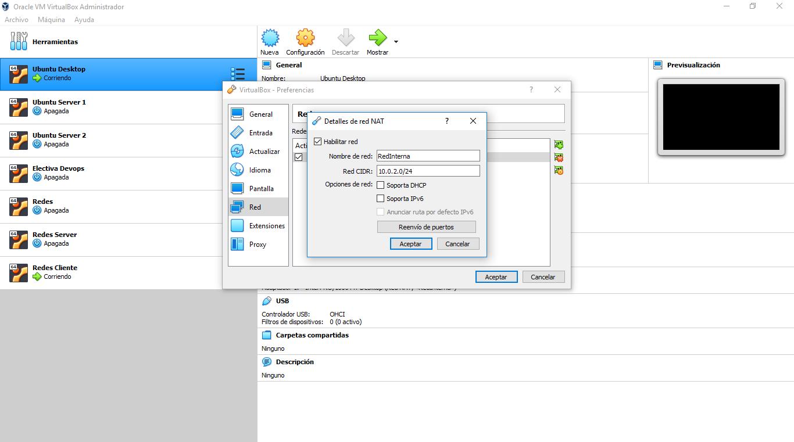
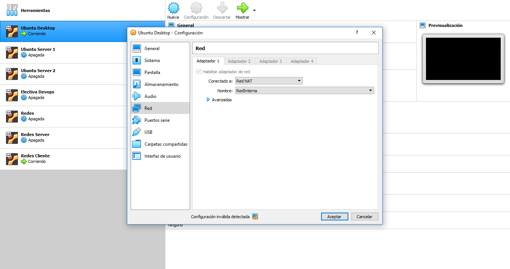
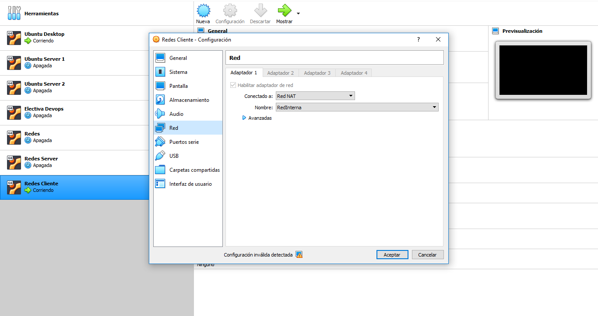

INFORME REDES DE DATOS
La presente página tiene como fin exponer la instalación, configuración y puesta en marcha de servidores DHCP, DNS y WEB.
Equipo de trabajo
| Código | Nombres | Apellidos | Rol |
|---|---|---|---|
| 201710379 | Yohan Eduardo | Caro Pongutá | Líder / desarrolador |
| 201710257 | Andrés Felipe | Chaparro Rosas | Consultor de recursos y herramientas / desarrollador |
| 201710254 | Fabian Alejandro | Cristancho Rincón | Tester / analista / desarrollador |
Cronograma de Actividades
A continuación se presenta el cronograma de actividades que se tuvo en cuenta para la realización del informe
Herramientas de Virtualización Seleccionadas
Para llevar a cabo la instalación de los recursos necesarios, se va a hacer uso del software de virtualización Virtualbox, el cual permite virtualizar diferentes máquinas que funcionan para cualquier sistema operativo.
Debido a que se van a poner en marcha servidores, el grupo de trabajo decidió que para que dicha implementación esté más cerca a la administración de servidores llevada a cabo en el mercado laboral, se va a usar la distribución de linux Ubuntu Desktop tanto para el servidor como para el cliente.


Configuración de la red interna
Para la correcta configuración y puesta en marcha de los servidores, es necesario crear una red interna que permita una correcta comunicación y transferenia entre clientes y servidor.
A continuación se presenta el paso a paso para la configuración de la red interna en Virtual Box
Paso 1
En Virtual Box, ingresar a Archivo > Preferencias
Paso 2
En la ventana que se abre, crear una nueva red interna con dirección de red que se quiere utilizar, para el caso 10.0.2.0
Paso 3
Entrar a la configuración de red del servidor, y asignar la red interna que se acabó de crear. Verificar que no haya otro tipo de red habilitado
Paso 4
Igual que en el paso anterior, entrar a la configuración de red del cliente, y asignar la red interna que se acabó de crear. Verificar que no haya otro tipo de red habilitado
Paso 5
Activar la máquina y realizar los pasos necesarios para la configuración y puesta en marcha de los servidores
Servidores
Para la implementación del proyecto, se presenta a continuación los servidores que se debían tener en cuenta
Servidor DHCP

Es un servidor de red que permite la asignación automática de direcciones IP, gateways predeterminadas y otros parámetros de red necesarios para los clientes.
Servidor DNS

Es un sistema de nombres para computadores, el cual traduce una dirección IP a una dirección legible por humanos. Este proceso es la columna vertebral de Internet.
Servidor WEB
Es un software que forma parte del servidor y cuya función principal es devolver información (páginas) cuando recibe peticiones por parte de usuarios, que permite acceder a páginas web.
Documento Planificación
En el siguiente botón se podrá visualizar el Documento de Planificación presentado anteriormente
En este documento se presenta la información inicial del proyecto, esto con el fin de entender de mejor manera la página web
Visualizar(Firefox o Opera) DescargarConclusiones
Con el proyecto de instalación, configuración y puesta en marcha se aprendieron conceptos propios de los servidores DHCP, DNS y WEB, así como el funcionamiento a bajo nivel y la forma de abordar los diferentes problemas que se pueden llegar a presentar en el ámbito empresarial.
De igual manera, el uso de una distribución Linux para poner en marcha los servidores permitió tener un mayor acercamiento a las configuraciones de servidores y archivos de configuración necesarios para que su administración se realice correctamente.
El uso de un servicio cloud para la instalación, configuración y puesta en marcha de un servidor web permite que recursos como la página web en cuestión se expongan al público en general, con el fin de que se pueda compartir información y compartirla con cualquier persona en cualquier parte del mundo.